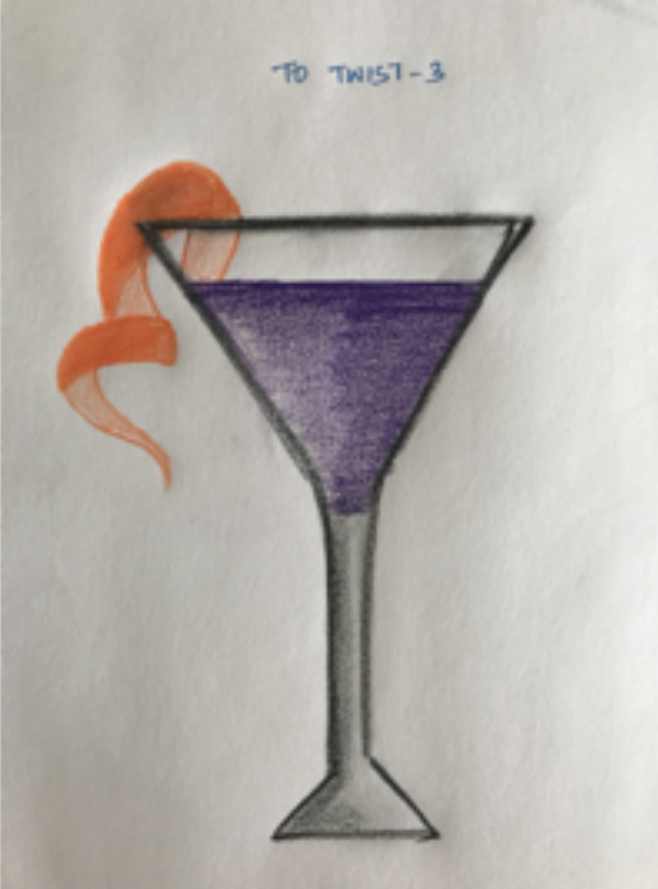

Animation using P5
Animation

Project Description
Animation done using P5.js was one of projects from the Advanced Art and Animation class.The First project that was given was by randomly choosing a word from the word list and create an animation from that I picked twist.Which I did a simple MouseIspressed animation.
Project Details
| Type | Individual project |
| Date | Aug 2017 - Dec 2017 |
| Categories | Animation,P5.js |
Ideation

Twist
Aesthetics was quite a challenge and was decided based on be colorful and the needs to attaract children in using the application.
Twist and Turn
I had to create an cyclic opposite of twist and turn and after numerous ideation process,I came out with a casette tape that could show both and created a rotation animation with the circle.